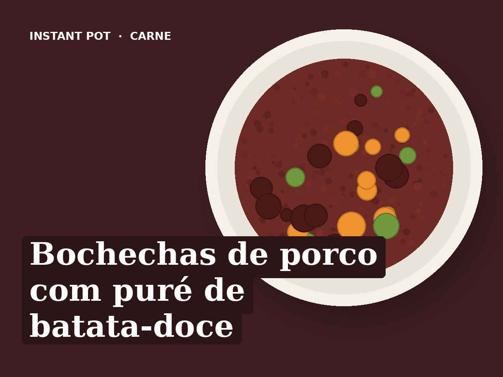

Bochechas de porco com puré de batata-doce
Ingredientes
- 800 g de bochechas de porco limpas
- 1 cebola
- 3 dentes de alho
- 2 cenouras
- 150 ml de vinho tinto
- 150 ml de água
- 1 folha de louro
- 1 raminho de tomilho
- 1 colher de chá de colorau
- 1 colher de sopa de azeite
- Sal e pimenta q.b.
- Para o puré: 800 g de batata-doce, 250 ml de água, 1 colher de sopa de azeite, sal e noz-moscada q.b.
Preparação
- Saltear: aquecer o azeite e alourar as bochechas temperadas com sal e pimenta, em 2 vezes. Retirar.
- Juntar a cebola, o alho e a cenoura picados, 3 minutos. Deitar o vinho e raspar bem o fundo.
- Voltar a pôr as bochechas. Juntar a água, o louro, o tomilho e o colorau.
- Pressão alta, 35 minutos. Libertação natural 15 minutos.
- Retirar as bochechas e tapar para não arrefecerem. Tirar o louro e o tomilho e triturar o molho com a varinha mágica.
- Saltear: deixar o molho reduzir 5 a 8 minutos, até engrossar. Voltar a pôr as bochechas no molho e transferir tudo para uma travessa. Lavar a cuba.
- Puré: pôr 250 ml de água na cuba e o suporte de vapor com a batata-doce em pedaços grandes.
- Pressão alta, 8 minutos. Libertação rápida.
- Esmagar a batata-doce com o azeite, o sal e a noz-moscada. Servir com as bochechas e o molho por cima.